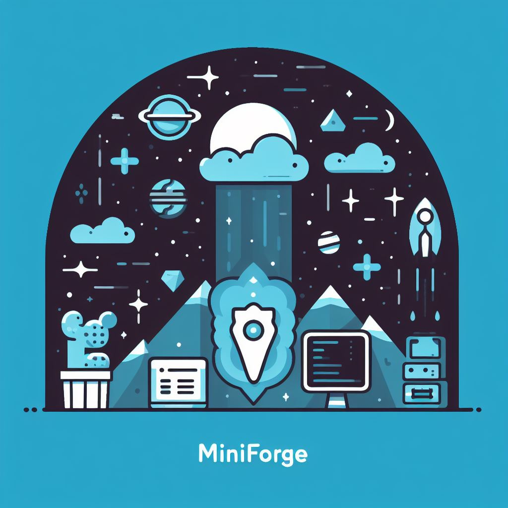

miniforge: 파이썬과 R의 패키지 및 개발 환경 관리 도구

파이썬과 R의 의존성 지옥
파이썬과 R에는 유용한 라이브러리들이 아주 많습니다. 그러다보니 여러 라이브러리들이 버전이 서로 충돌하거나 호환되지 않는 경우가 발생하곤 합니다. 예를 들어 A 라이브러리가 B 라이브러리 1.0 버전에 기반해 만들어졌는데 C 라이브러리가 B 라이브러리 2.0 버전을 요구한다면 A와 C를 동시에 사용할 수 없는 경우가 생깁니다.
이런 의존성 문제를 해결하기 위해 다양한 방법론들이 등장했습니다. 파이썬의 경우에는 venv + pip, Pyenv, Poetry, Conda, PDM 등과 같은 새로운 라이브러리를 이용해 프로젝트 별로 의존성을 관리할 수 있도록 합니다. 문제는 이런 도구들도 만능이 아니기에 의존성 지옥 탈출은 요원해 보입니다.
콘다(conda)
콘다는 Windows, macOS 및 Linux에서 실행되는 오픈 소스 패키지 관리 시스템이자 환경 관리 시스템으로 파이썬 뿐만 아니라 R 패키지도 지원합니다. 그래서 주로 과학 분야에서 많이 사용되는 도구입니다. 그러나 덩치가 커서 작은 프로젝트에는 너무 많은 의존성과 리소스를 잡아먹는다는 단점이 있죠.
miniforge
miniforge는 덩치큰 아나콘다를 아주 날씬하게 만드는 프로젝트입니다. 그래서 아래와 같은 특징을 갖습니다.
- 기본(그리고 유일한) 채널로 conda-forge를 사용.
- 표준 Python 인터프리터(일명 “CPython”) 대신 PyPy에 대한 지원.
- 콘다보다 더 빠른 맘바(mamba)도 지원.
- 다양한 CPU 아키텍처(x86_64, ppc64le, Apple M1을 포함한 aarch64)지원.
맘바(mamba)는 또 뭐죠?
콘다의 다른 단점에 라이브러리 설치 속도가 느리다는 점이 었습니다. 그래서 C++으로 작성된 맘바라는 도구가 새로 나오게 되었죠.
파이썬 생태계는 이런 것이 특징입니다. 항상 새로운 도구가 우후죽순 나옵니다.
맘바포지(mamba-forge)
맘바포지는 제가 생각하는 현재 시점에서 패키지와 개발 환경 관리 문제를 가장 쉽게 해결하는 도구입니다. 맘바포지를 설치하는 방법과 개발 환경을 설정을 알아보도록 하죠.
설치하기
공식문서에서 각각의 OS에 맞는 설치 방법을 찾아 볼 수 있습니다. 저는 리눅스를 사용하기에 아래 명령어로 설치 하였습니다.
wget "https://github.com/conda-forge/miniforge/releases/latest/download/Mambaforge-$(uname)-$(uname -m).sh"
bash Mambaforge-$(uname)-$(uname -m).sh개발 환경 설정
가상환경 만들기
맘바포지의 (base) 환경에 왠만하면 아무런 패키지를 설치하지 않을 것을 권장합니다. 따라서 새로운 가상환경인 ipynb를 만들어 주피터랩을 사용해 보겠습니다.
mamba create -n ipynb python=3.11 r-base r-essentials jupyterlab콘다를 써본적 있으시다면 바로 아시겠지만 conda를 mamba로 바꾸기만 하면 됩니다. 결과는 아래와 같습니다.
__ __ __ __
/ \ / \ / \ / \
/ \/ \/ \/ \
███████████████/ /██/ /██/ /██/ /████████████████████████
/ / \ / \ / \ / \ \____
/ / \_/ \_/ \_/ \ o \__,
/ _/ \_____/ `
|/
███╗ ███╗ █████╗ ███╗ ███╗██████╗ █████╗
████╗ ████║██╔══██╗████╗ ████║██╔══██╗██╔══██╗
██╔████╔██║███████║██╔████╔██║██████╔╝███████║
██║╚██╔╝██║██╔══██║██║╚██╔╝██║██╔══██╗██╔══██║
██║ ╚═╝ ██║██║ ██║██║ ╚═╝ ██║██████╔╝██║ ██║
╚═╝ ╚═╝╚═╝ ╚═╝╚═╝ ╚═╝╚═════╝ ╚═╝ ╚═╝
mamba (1.1.0) supported by @QuantStack
GitHub: https://github.com/mamba-org/mamba
Twitter: https://twitter.com/QuantStack
█████████████████████████████████████████████████████████████
Looking for: ['python=3.11', 'r-base', 'r-essentials', 'jupyterlab']
conda-forge/noarch @ 3.7MB/s 3.2s
conda-forge/linux-64 30.2MB @ 4.2MB/s 7.3s
All requested packages already installed
Preparing transaction: done
Verifying transaction: done
Executing transaction: done
To activate this environment, use
$ mamba activate ipynb
To deactivate an active environment, use
$ mamba deactivate가상환경 활성화 하기
mamba activate ipynb파이썬 라이브러리 설치하기
아래 명령어를 통해 쉽게 설치할 수 있습니다.
mamba install pandasR 라이브러리 설치하기
R의 경우 보통 라이브러리 이름 앞에 r-을 붙이면 됩니다만, 확실하지 않기 때문에 다음 search 명령어를 통해 미리 확인하고 설치하면 좋습니다.
mamba search r-tidyverse위 명령어를 통해 해당 라이브러리가 존재한다는 것을 알 수 있습니다.
mamba install r-tidyverse -y라이브러리 제거하기
설치한 라이브러리를 제거하고 싶다면 아래 명령어를 사용합니다.
mamba remove r-tidyverse의존성 파일로 저장하기
개발을 하다보면 배포 혹은 프로젝트간의 전환을 위해 의존성을 파일로 저장해야하는 경우가 생깁니다. 그럴 때에는 아래와 같이 하면 됩니다.
mamba env export > env.yaml의존성 파일로 부터 가상환경 만들기
위 명령어로 생성된 파일을 가지고 다음 명령어를 사용해 새로운 가상환경을 만들 수 있습니다.
mamba env create -f env.yaml가상환경 비활성화하기
일반적으로는 그냥 터미널을 꺼버리고는 합니다만, 실수를 방지하기 위해 다음 명령어를 습관적으로 써주는 것이 좋습니다.
mamba deactivate 끝으로,
파이썬과 R은 다양한 라이브러리를 사용해 프로젝트를 진행합니다. 그렇기에 라이브러리의 버전과 호환성을 관리하는 작업은 쉽지 않습니다. 여러 의존성 관리 도구들이 있지만 각각 장단점이 있고 개발자의 취향과 프로젝트의 요구사항에 따라 어떤 도구를 사용할지가 달라집니다. 파이썬과 R 라이브러리 관리에는 왕도가 없습니다. 최신 도구가 나오면 사용해보고 배우는 것을 멈추지 마세요.